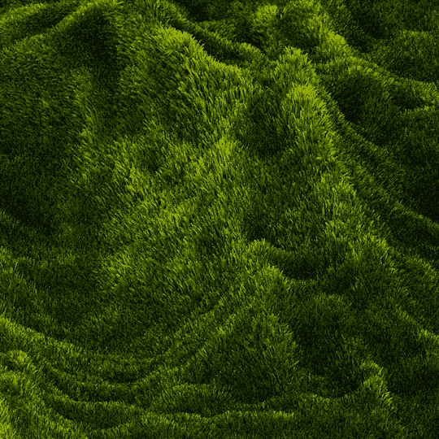
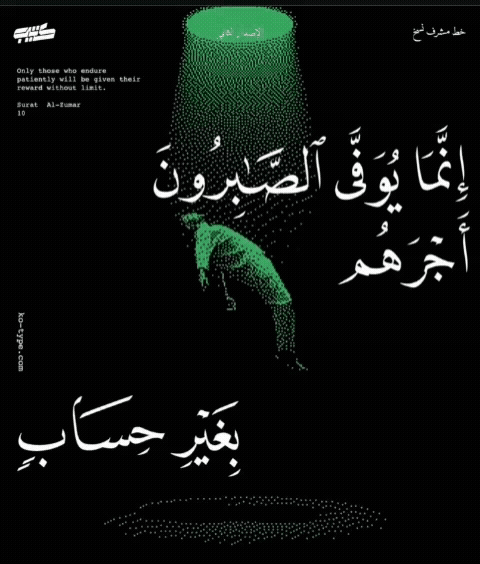

_____ ____ _____ _______
/\ / ____|/ __ \ / ____|__ __|
/ \ | (___ | | | | (___ | |
/ /\ \ \___ \| | | |\___ \ | |
/ ____ \ ____) | |__| |____) | | |
/_/ \_\_____/ \____/|_____/ |_|
"Translation is not a matter of words only: it is a matter of making intelligible a whole culture."
Engine:ASOST Core v2.4
Model :Gemini-2.5-Pro
Status:OPERATIONAL
Uptime:14d 2h 31m
Speed :420 pg/hr
Rate :98.7% success
CPU
12%
RAM
26%
DSK
61%
/* DROP PDF/DOCX FILES HERE */
[ CLICK TO BROWSE ]
/* ACTIVE QUEUE */


── 60K LIMIT
01 EXTRACT TEXT
02 SMART CHUNK
03 TRANSLATE
04 ASSEMBLE
05 CREATE PDF